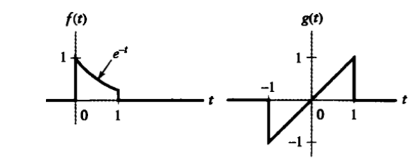
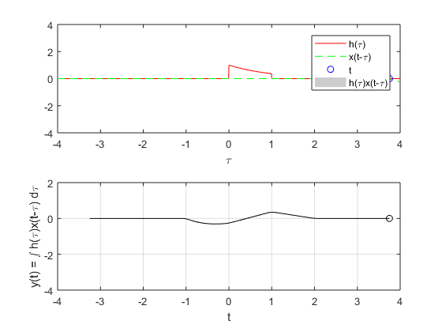
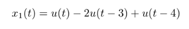
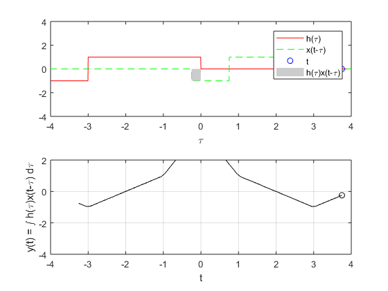
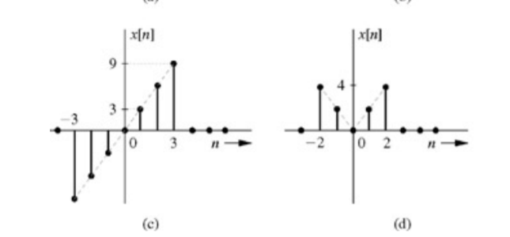
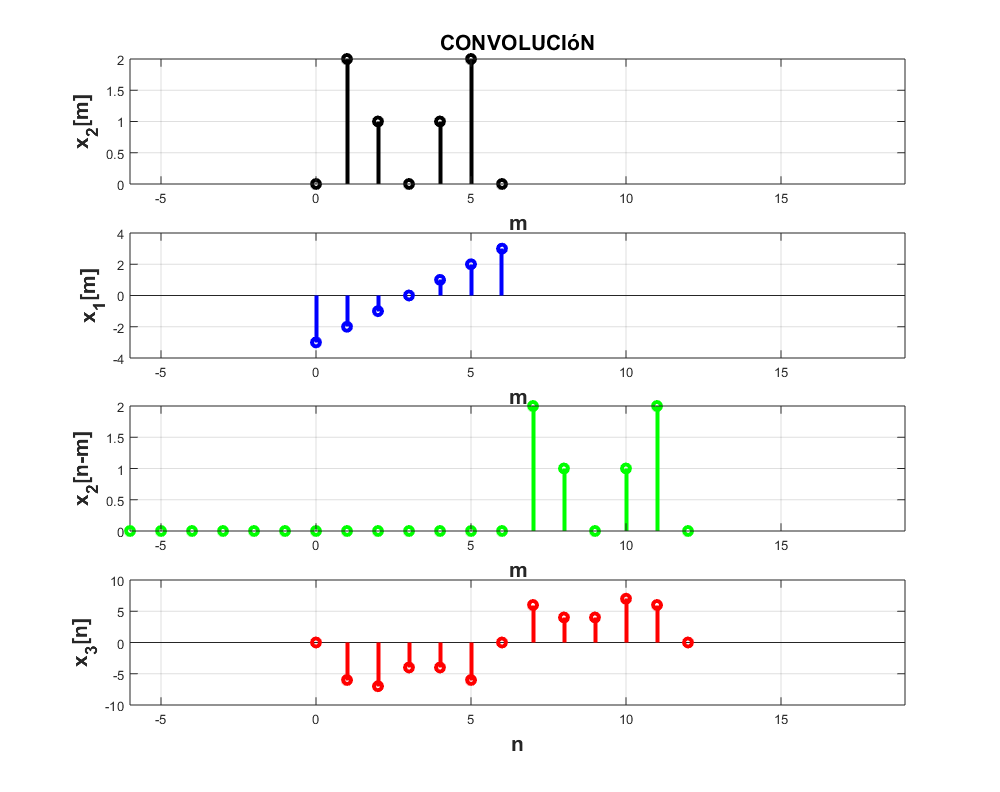

Practica 4
Materia: Ánalisis de señales y sistemas
Alumnos: Perez Genaro Xavier
Robles Palmero Luis MiguelGrupo:2MV1
Contents
Objetivos
- Conocer métodos básicos de integración numérica
- Manipulación de instrucciones en MATLAB
- Simular convoluciones y correlaciones de señales continuas
- Simular convoluciones y correlaciones de señales discretas
Introduccion
Aqui va texto
Problema 1
Para el PR04 reporte la grafica de la simulación númerica de la convolución y compare con el resultado análitico que obtuvo para el problema 1, esto es, su práctica tendrá que incluir una llamada a la funciónn convconm y posteriormente se tendrá que mostrar (mediante el Publish) la gráfica tanto de las señales involucradas como el resultado de la convolución, y en esta última gráficara su resultado analitico, se tendrá que incluir el resultado analitico. Tenemos las siguientes señales

Por lo tanto realizamos la asiganacion de cada funcion
f=@(t) t.*(t>=-1 & t<1); g=@(t) exp(-t).*(t>=0 & t<1);
llamando a la funcion convconm.m
convconm(f,g)
Comparando la grafica establecida en el PR04

Problema 2
Para el PR05 reporte la grafica de la simulación númerica de la correalción y compare con el resultado análitico que obtuvo para el problema e), esto es, su práctica tendrá que incluir una llamada a la funciónn convconm y posteriormente se tendrá que mostrar (mediante el Publish) la gráfica tanto de las señales involucradas como el resultado de su correlación, y en esta última graficara su resultado analitico, se tendrá que incluir el resultado analitico. Tenemos la siguiente funcion

Ya que para hacer una correlacion podemos hacerla usando una combolucion se asignas las siguientes funciones para llevar a cabo la convolucion
a= @(t) 1.*(t>=0 & t<3)+-1.*(t>=3 & t<4); b= @(t) 1.*(t>=-3 & t<0)+-1.*(t>=-4 & t<-3);
Y llamamos a la funcion convconm
convconm(a,b)
Problema 3
Realice la simuación de la convolución de las señales (c) con (d) del problema 3.1.1

asignamos las funciones como vectores para el uso de la funcion convdisc
c=[-3,-2,-1,0,1,2,3]; d=[0,2,1,0,1,2,0]; n=0:6; convdisc([n;c],[n;d])
Problema 4
Realice la simuación de la correlación de las señales (c) con (d) del problema 3.1.1 Realizando el mismo procedimiento que en problema 2 Dado que la señal movil seria la d) entonces se quedaria igual cuando se invierte la señal Por lo tanto tenemo la misma funcion
c=[-3,-2,-1,0,1,2,3]; d=[0,2,1,0,1,2,0]; n=0:6; convdisc([n;c],[n;d])
Poblema 5
Realice la la convolución de las señales (c) con (d) del problema 3.1.1 utilizando el comando conv de MATLAB, muestre el código utilizado y gráfique el resultado, sugerencia: Utilice las propiedades de traslación de la convolución.
r=conv(c,d)
r =
0 -6 -7 -4 -4 -6 0 6 4 4 7 6 0